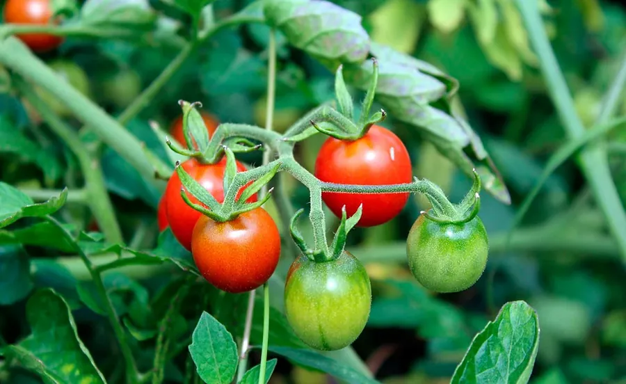

🍓 Conhecendo as frutíferas!
As frutíferas são plantas que produzem frutos, como morangos, limões e acerolas. Algumas até crescem bem em vasos!

🍓 O que a frutífera gosta?
Antes de conhecer melhor essas plantas, descubra duas coisas importantes para cuidar delas:
Luz
A maioria das frutíferas gosta de bastante sol para crescer e produzir frutos. A necessidade varia com a espécie.
Água
Elas costumam precisar de água com regularidade, principalmente quando estão com frutos. Evite deixar o solo encharcado.
Importante: frutos precisam de tempo! Muitas frutíferas levam meses para dar frutos, e cada espécie tem sua época. Calma e cuidado ajudam.
🍓 O que torna uma frutífera especial?
O fruto se forma a partir da flor, depois da polinização. Dentro dele ficam as sementes, que podem dar origem a novas plantas.
Primeiro vem a flor
Os frutos nascem das flores. Sem flor polinizada, em geral, não há fruto.
Frutos têm sementes
As sementes protegem a próxima geração da planta. Muitos animais ajudam a espalhá-las.
Pedem paciência
Algumas frutíferas demoram meses ou até anos para dar os primeiros frutos.
🔎 Detetive das frutíferas!
Toque nos tópicos para descobrir mais sobre essas plantas.
🌸 Como nasce um fruto?
Primeiro, a planta floresce. Depois da polinização, parte da flor se transforma em fruto, com sementes dentro.
🐝 Qual o papel das abelhas?
Abelhas e outros insetos levam o pólen de uma flor para outra. Isso ajuda muitas frutíferas a produzirem frutos.
🍋 Por que alguns frutos são azedos ou doces?
Cada fruto tem sua composição. O sabor muda de espécie para espécie e, muitas vezes, com o ponto de amadurecimento.
🧺 Quando colher?
Cada fruta tem seu ponto. Peça ajuda a um adulto para saber se está madura e lave bem antes de comer.
🪴 Como cuidar de uma frutífera?
Frutíferas pedem cuidados constantes, mas a recompensa é saborosa!
Dê bastante sol
A maioria gosta de muita luz do dia. Um lugar bem iluminado ajuda a planta a florescer e dar frutos.
Regue com regularidade
O solo deve ficar levemente úmido, sem encharcar. Observe a terra antes de regar.
Escolha um vaso adequado
Algumas precisam de espaço para crescer. Vasos com furos e terra boa ajudam.
Lave antes de comer
Peça ajuda a um adulto para colher e lave os frutos antes de comer. Nunca coma frutos de plantas desconhecidas.
🧠 E agora, pequeno jardineiro?
Imagine que você plantou um morangueiro. A planta cresceu, mas ainda não deu nenhum fruto. Ela fica em um lugar com pouca luz. O que você pode fazer para ajudar?
Qual cuidado vale a pena observar?
Descobrir a resposta
💡 Muitas frutíferas precisam de bastante luz para florescer e dar frutos. Mover a planta para um lugar mais claro pode ajudar.
Lembre-se também de ter paciência: os frutos levam tempo para aparecer.
💡 Você sabia?
O morango é um fruto diferente! As sementinhas que vemos do lado de fora são, na verdade, os verdadeiros frutos da planta, e a parte vermelha é um engrossamento da flor.
E o Meu PlantAmigo?
O Meu PlantAmigo acompanha a umidade do solo para ajudar você a regar na hora certa. Para frutíferas, a rega regular e equilibrada faz diferença, principalmente na época de flores e frutos.
🍓 Você virou especialista em frutíferas!
Agora que você descobriu os segredos dessas plantas, teste seus conhecimentos no quiz.
Fazer o quiz